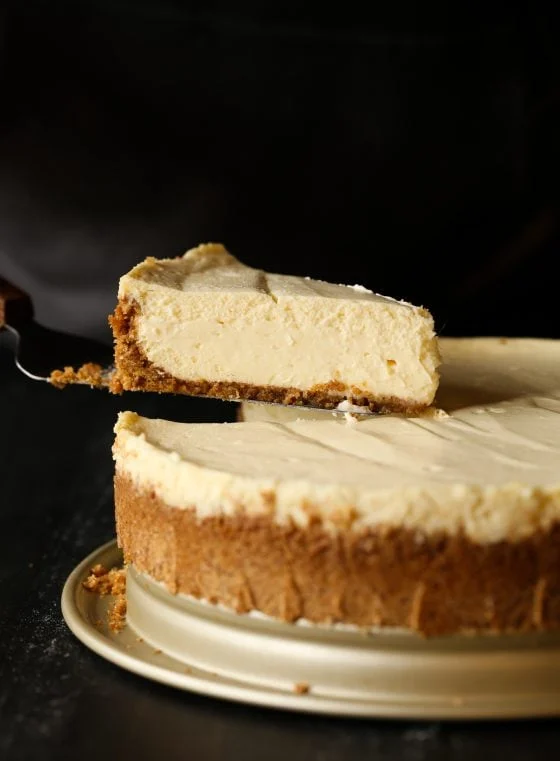

Cheese Cake
Home

Decrepition
Creamy, smooth, and rich,
this classic cheesecake recipe with a buttery
graham cracker crust is simply
decadent. My no-fuss recipe is a
must-try— plus, there's no water
bath required for a crack-free cheesecake!
Ingredients:
- Graham cracker crust
- Cream Cheese
- Sugare
- Vanilla
- Eggs
- Lemon
- Sour Cream
Steps:
- Double wrap the bottom of your pan with foil,
ensuring the layers are overlapped to prevent water
from getting into the pan.
Preheat the oven to 350F
- Combine the graham cracker crumbs, butter, sugar, and salt.
Press into the bottom and up the sides of the pan..
- Make the ricotta mixture.
- Layer the lasagna according to the recipe instructions
- Mix the cream cheese and sugar on medium until smooth.
Turn the speed to low and add the sour cream and vanilla.
Scrape the sides of the bowl as necessary.
Add the eggs one at a time, until just mixed.
Pour the filling into the crust and spread evenly.
- Bake the cheesecake for 60-70 minutes, until the center is almost set.
Run a knife around the rim to gently loosen the cake.